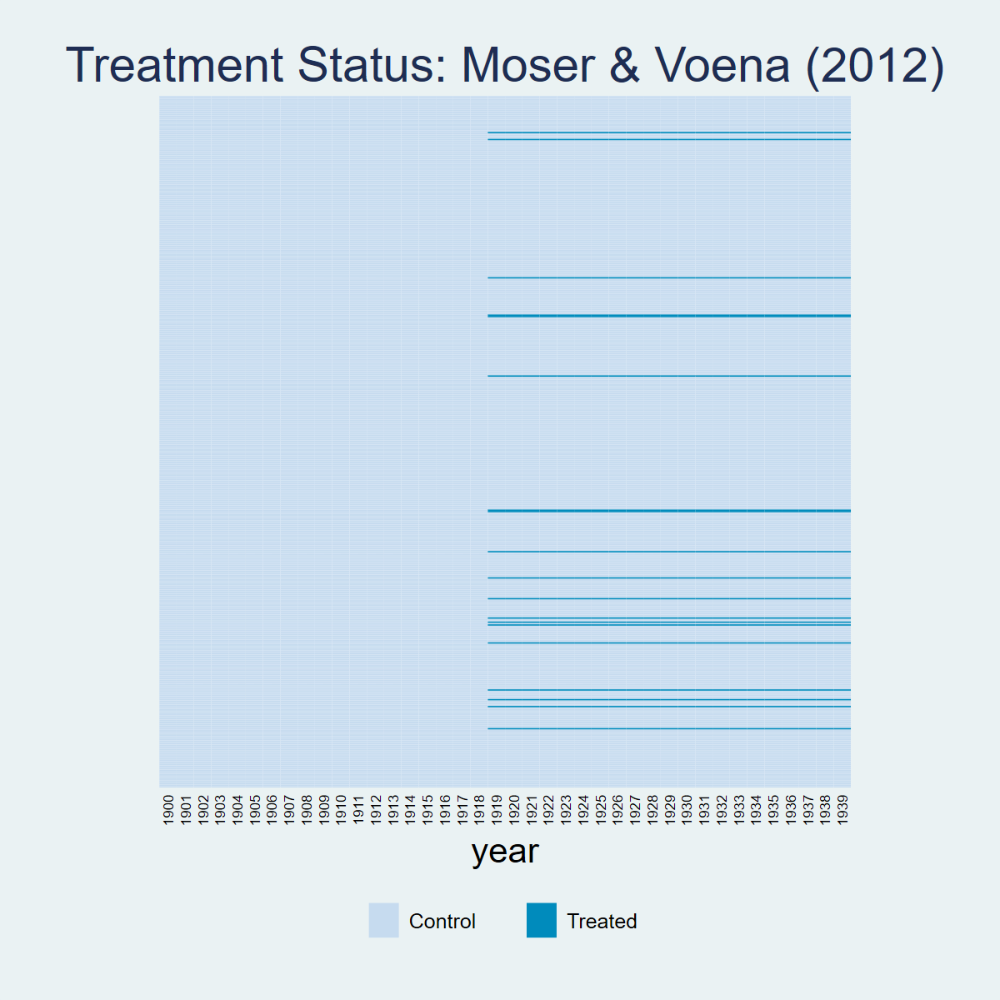
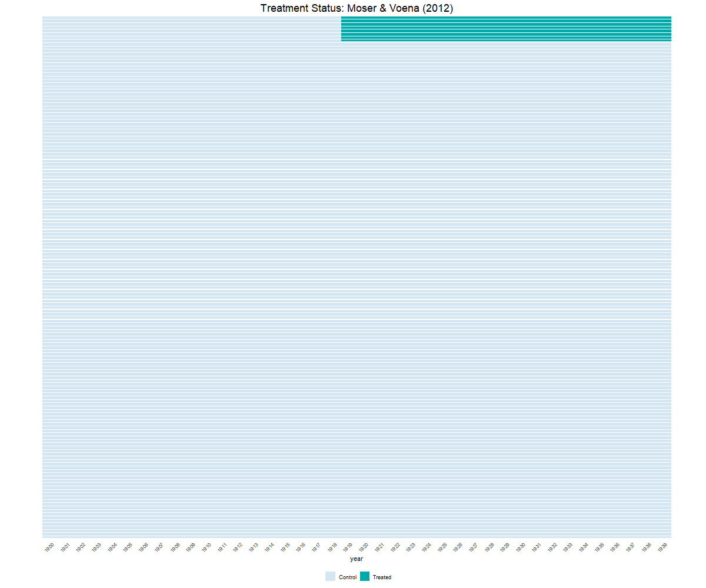
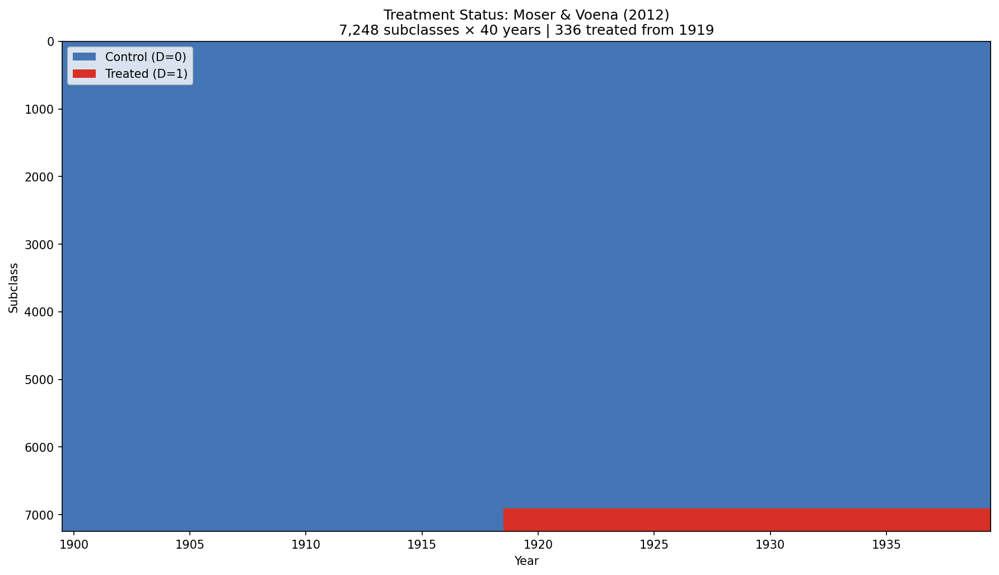

2 Chapter 4: Alternatives to Parallel Trends
2.1 Overview
Dataset: Moser & Voena (2012) — moser_voena_didtextbook.dta
This chapter explores alternatives to the parallel trends assumption. We consider: (1) TWFE with control variables, (2) Interactive Fixed Effects, (3) Synthetic Control, (4) Synthetic DID, and (5) sensitivity analysis using HonestDiD.
2.2 Panel View
* ssc install panelview, replace
copy "https://raw.githubusercontent.com/anzonyquispe/did_book/main/cc_xd_didtextbook_2025_9_30/Data%20sets/Moser%20and%20Voena%202012/moser_voena_didtextbook.dta" "moser_voena_didtextbook.dta", replace
use "moser_voena_didtextbook.dta", clear
panelview patents twea, i(subclass) t(year) type(treat) title("Treatment Status: Moser & Voena (2012)") ylabel(none) ytitle("")
graph export "figures/ch03_panelview_stata.png", replace width(1200)
library(panelView)
load(url("https://raw.githubusercontent.com/anzonyquispe/did_book/main/cc_xd_didtextbook_2025_9_30/Data%20sets/Moser%20and%20Voena%202012/moser_voena_didtextbook.RData"))
png("figures/ch03_panelview_R.png", width = 1000, height = 600)
panelview(patents ~ twea, data = df, index = c("subclass", "year"), type = "treat",
main = "Moser & Voena (2012)", ylab = "")
dev.off()
import pandas as pd
import matplotlib.pyplot as plt
import matplotlib.colors as mcolors
from matplotlib.patches import Patch
df = pd.read_parquet("https://raw.githubusercontent.com/anzonyquispe/did_book/main/cc_xd_didtextbook_2025_9_30/Data%20sets/Moser%20and%20Voena%202012/moser_voena_didtextbook.parquet")
pv = df.pivot_table(index="subclass", columns="year", values="twea", aggfunc="first")
pv_sorted = pv.loc[pv.mean(axis=1).sort_values(ascending=False).index]
cmap = mcolors.ListedColormap(["#D4E6F1", "#00AAAA"])
fig, ax = plt.subplots(figsize=(12, 10))
ax.imshow(pv_sorted.values, aspect="auto", cmap=cmap, interpolation="nearest", vmin=0, vmax=1)
for i in range(0, len(pv_sorted), 10):
ax.axhline(y=i - 0.5, color="white", linewidth=0.15)
ax.set_xticks(range(0, len(pv_sorted.columns), 1))
ax.set_xticklabels([int(c) for c in pv_sorted.columns], rotation=45, ha="right", fontsize=8)
ax.set_yticks([])
ax.set_xlabel("year")
ax.set_title("Treatment Status: Moser & Voena (2012)", fontsize=16)
ax.legend(handles=[Patch(facecolor="#D4E6F1", edgecolor="gray", label="Control"),
Patch(facecolor="#00AAAA", edgecolor="gray", label="Treated")],
loc="lower center", bbox_to_anchor=(0.5, -0.12), ncol=2)
plt.tight_layout()
plt.savefig("figures/ch03_panelview_Python.png", dpi=150, bbox_inches="tight")
plt.show()
2.3 4.1 TWFE with Controls (controlling for patents in 1900)
Estimate the event-study TWFE regression controlling for
year#patents1900interactions. Are the estimated event-study effects with controls very different from those without controls?
* ssc install reghdfe, replace
copy "https://raw.githubusercontent.com/anzonyquispe/did_book/main/cc_xd_didtextbook_2025_9_30/Data%20sets/Moser%20and%20Voena%202012/moser_voena_didtextbook.dta" "moser_voena_didtextbook.dta", replace
use "moser_voena_didtextbook.dta", clear
reghdfe patents reltimeminus* reltimeplus*, absorb(year#patents1900 treatmentgroup) cluster(subclass)(dropped 120 singleton observations)
HDFE Linear regression Number of obs = 289,800
Absorbing 2 HDFE groups F( 39, 7244) = 5.67
Statistics robust to heteroskedasticity Prob > F = 0.0000
R-squared = 0.2017
Adj R-squared = 0.2005
Within R-sq. = 0.0018
Number of clusters (subclass) = 7,245 Root MSE = 1.2046
(Std. err. adjusted for 7,245 clusters in subclass)
--------------------------------------------------------------------------------
| Robust
patents | Coefficient std. err. t P>|t| [95% conf. interval]
---------------+----------------------------------------------------------------
reltimeminus1 | -.0199956 .0448816 -0.45 0.656 -.1079766 .0679854
reltimeminus2 | -.0641054 .0367139 -1.75 0.081 -.1360753 .0078645
reltimeminus3 | -.0497285 .0332297 -1.50 0.135 -.1148684 .0154115
reltimeminus4 | .0150341 .0356259 0.42 0.673 -.0548031 .0848712
reltimeminus5 | .0407338 .0405428 1.00 0.315 -.0387419 .1202095
reltimeminus6 | -.0005561 .0368071 -0.02 0.988 -.0727086 .0715965
reltimeminus7 | .0035782 .0456115 0.08 0.937 -.0858336 .0929901
reltimeminus8 | .0110298 .042976 0.26 0.797 -.0732157 .0952752
reltimeminus9 | -.0198643 .0411051 -0.48 0.629 -.1004423 .0607136
reltimeminus10 | .013951 .0452813 0.31 0.758 -.0748135 .1027155
reltimeminus11 | -.0710991 .049324 -1.44 0.149 -.1677885 .0255903
reltimeminus12 | -.0046761 .0393384 -0.12 0.905 -.0817909 .0724386
reltimeminus13 | .0143954 .0390986 0.37 0.713 -.0622493 .0910401
reltimeminus14 | .0017015 .0381674 0.04 0.964 -.0731177 .0765207
reltimeminus15 | .0211697 .0407824 0.52 0.604 -.0587756 .101115
reltimeminus16 | -.0151022 .0377199 -0.40 0.689 -.0890442 .0588399
reltimeminus17 | .0026673 .046629 0.06 0.954 -.088739 .0940737
reltimeminus18 | .0573644 .0437614 1.31 0.190 -.0284207 .1431494
reltimeplus1 | .0163077 .0387799 0.42 0.674 -.0597122 .0923277
reltimeplus2 | .0395616 .0419817 0.94 0.346 -.0427348 .121858
reltimeplus3 | .0649224 .0412167 1.58 0.115 -.0158743 .1457191
reltimeplus4 | .0332733 .0474389 0.70 0.483 -.0597208 .1262674
reltimeplus5 | .0804001 .0574766 1.40 0.162 -.0322708 .193071
reltimeplus6 | .0170507 .0474503 0.36 0.719 -.0759657 .1100671
reltimeplus7 | .0348215 .0534565 0.65 0.515 -.0699689 .1396119
reltimeplus8 | .1041923 .0488441 2.13 0.033 .0084436 .199941
reltimeplus9 | .1939013 .0554245 3.50 0.000 .0852531 .3025495
reltimeplus10 | .2009451 .0541914 3.71 0.000 .0947141 .3071762
reltimeplus11 | .1262371 .0598691 2.11 0.035 .0088762 .2435981
reltimeplus12 | .128423 .0641903 2.00 0.045 .0025912 .2542548
reltimeplus13 | .2788762 .072442 3.85 0.000 .1368687 .4208836
reltimeplus14 | .6698552 .1064112 6.29 0.000 .4612582 .8784522
reltimeplus15 | .6181703 .1019476 6.06 0.000 .4183233 .8180173
reltimeplus16 | .4215474 .0896653 4.70 0.000 .2457773 .5973176
reltimeplus17 | .5268535 .097861 5.38 0.000 .3350174 .7186896
reltimeplus18 | .7003532 .1104681 6.34 0.000 .4838035 .9169028
reltimeplus19 | .535842 .0965702 5.55 0.000 .3465363 .7251477
reltimeplus20 | .650356 .1026827 6.33 0.000 .449068 .8516441
reltimeplus21 | .779268 .1193597 6.53 0.000 .5452882 1.013248
_cons | .4615322 .0085679 53.87 0.000 .4447366 .4783278
--------------------------------------------------------------------------------copy "https://raw.githubusercontent.com/anzonyquispe/did_book/main/cc_xd_didtextbook_2025_9_30/Data%20sets/Moser%20and%20Voena%202012/moser_voena_didtextbook.dta" "moser_voena_didtextbook.dta", replace
use "moser_voena_didtextbook.dta", clear
* F-test on pre-trends
test reltimeminus1 reltimeminus2 reltimeminus3 reltimeminus4 reltimeminus5 reltimeminus6 reltimeminus7 reltimeminus8 reltimeminus9 reltimeminus10 reltimeminus11 reltimeminus12 reltimeminus13 reltimeminus14 reltimeminus15 reltimeminus16 reltimeminus17 reltimeminus18 F( 18, 7244) = 5.07
Prob > F = 0.0000copy "https://raw.githubusercontent.com/anzonyquispe/did_book/main/cc_xd_didtextbook_2025_9_30/Data%20sets/Moser%20and%20Voena%202012/moser_voena_didtextbook.dta" "moser_voena_didtextbook.dta", replace
use "moser_voena_didtextbook.dta", clear
* Testing correlation between treatment and covariate
reg patents1900 treatmentgroup if year==1900 Source | SS df MS Number of obs = 7,248
-------------+---------------------------------- F(1, 7246) = 13.05
Model | 7.82905752 1 7.82905752 Prob > F = 0.0003
Residual | 4345.55822 7,246 .59971822 R-squared = 0.0018
-------------+---------------------------------- Adj R-squared = 0.0017
Total | 4353.38728 7,247 .600715783 Root MSE = .77441
--------------------------------------------------------------------------------
patents1900 | Coefficient Std. err. t P>|t| [95% conf. interval]
---------------+----------------------------------------------------------------
treatmentgroup | -.156312 .0432625 -3.61 0.000 -.241119 -.071505
_cons | .2217882 .0093148 23.81 0.000 .2035285 .2400478
--------------------------------------------------------------------------------library(fixest); library(haven); library(car); library(dplyr)
load(url("https://raw.githubusercontent.com/anzonyquispe/did_book/main/cc_xd_didtextbook_2025_9_30/Data%20sets/Moser%20and%20Voena%202012/moser_voena_didtextbook.RData"))
formula_str <- paste("patents ~",
paste(paste0("reltimeminus", 1:18), collapse = " + "), "+",
paste(paste0("reltimeplus", 1:21), collapse = " + "),
"| year^patents1900 + treatmentgroup")
model_controls <- feols(as.formula(formula_str),
data = df, cluster = ~subclass)
summary(model_controls)
# F-test on pre-trends
linearHypothesis(model_controls, paste0("reltimeminus", 1:18))
# Correlation test
corr_test <- feols(patents1900 ~ treatmentgroup,
data = df %>% filter(year == 1900))
summary(corr_test)NOTE: 120/0 fixed-effect singletons were removed (120 observations).
OLS estimation, Dep. Var.: patents
Observations: 289,800
Fixed-effects: year^patents1900: 400, treatmentgroup: 2
Standard-errors: Clustered (subclass)
Estimate Std. Error t value Pr(>|t|)
reltimeminus1 -0.019996 0.044882 -0.445518 6.5596e-01
reltimeminus2 -0.064105 0.036714 -1.746081 8.0839e-02
reltimeminus3 -0.049728 0.033230 -1.496505 1.3457e-01
reltimeminus4 0.015034 0.035626 0.421998 6.7304e-01
reltimeminus5 0.040734 0.040543 1.004711 3.1507e-01
reltimeminus6 -0.000556 0.036807 -0.015108 9.8795e-01
reltimeminus7 0.003578 0.045612 0.078450 9.3747e-01
reltimeminus8 0.011030 0.042976 0.256650 7.9746e-01
reltimeminus9 -0.019864 0.041105 -0.483258 6.2893e-01
reltimeminus10 0.013951 0.045281 0.308096 7.5802e-01
reltimeminus11 -0.071099 0.049324 -1.441471 1.4950e-01
reltimeminus12 -0.004676 0.039338 -0.118870 9.0538e-01
reltimeminus13 0.014395 0.039099 0.368182 7.1275e-01
reltimeminus14 0.001702 0.038167 0.044580 9.6444e-01
reltimeminus15 0.021170 0.040782 0.519089 6.0371e-01
reltimeminus16 -0.015102 0.037720 -0.400376 6.8889e-01
reltimeminus17 0.002667 0.046629 0.057203 9.5438e-01
reltimeminus18 0.057364 0.043761 1.310844 1.8995e-01
reltimeplus1 0.016308 0.038780 0.420520 6.7412e-01
reltimeplus2 0.039562 0.041982 0.942354 3.4604e-01
reltimeplus3 0.064922 0.041217 1.575150 1.1527e-01
reltimeplus4 0.033273 0.047439 0.701392 4.8308e-01
reltimeplus5 0.080400 0.057477 1.398831 1.6191e-01
reltimeplus6 0.017051 0.047450 0.359338 7.1935e-01
reltimeplus7 0.034821 0.053457 0.651398 5.1481e-01
reltimeplus8 0.104192 0.048844 2.133160 3.2945e-02 *
reltimeplus9 0.193901 0.055425 3.498476 4.7074e-04 ***
reltimeplus10 0.200945 0.054191 3.708061 2.1041e-04 ***
reltimeplus11 0.126237 0.059869 2.108551 3.5018e-02 *
reltimeplus12 0.128423 0.064190 2.000659 4.5466e-02 *
reltimeplus13 0.278876 0.072442 3.849646 1.1931e-04 ***
reltimeplus14 0.669855 0.106411 6.294968 3.2540e-10 ***
reltimeplus15 0.618170 0.101948 6.063608 1.3979e-09 ***
reltimeplus16 0.421547 0.089665 4.701344 2.6323e-06 ***
reltimeplus17 0.526854 0.097861 5.383692 7.5262e-08 ***
reltimeplus18 0.700353 0.110468 6.339869 2.4376e-10 ***
reltimeplus19 0.535842 0.096570 5.548733 2.9791e-08 ***
reltimeplus20 0.650356 0.102683 6.333646 2.5375e-10 ***
reltimeplus21 0.779268 0.119360 6.528737 7.0807e-11 ***
---
RMSE: 1.20373 Adj. R2: 0.200463
Within R2: 0.001805
F-test: Chisq = 91.312550, p = 8.386428e-12
Correlation: treatmentgroup = -0.156312 (t = -3.61, p = 0.0003)import pandas as pd
import pyfixest as pf
import numpy as np
from scipy import stats
df = pd.read_parquet("https://raw.githubusercontent.com/anzonyquispe/did_book/main/cc_xd_didtextbook_2025_9_30/Data%20sets/Moser%20and%20Voena%202012/moser_voena_didtextbook.parquet")
minus_vars = [f"reltimeminus{i}" for i in range(1, 19)]
plus_vars = [f"reltimeplus{i}" for i in range(1, 22)]
df["year_x_pat1900"] = df["year"].astype(str) + "_" + \
df["patents1900"].astype(str)
fml = "patents ~ " + " + ".join(minus_vars + plus_vars) + \
" | year_x_pat1900 + treatmentgroup"
m = pf.feols(fml, data=df, vcov={"CRV1": "subclass"})
print(m.summary())
# F-test on pre-trends
c = m.coef()
v_mat = pd.DataFrame(m._vcov, index=c.index, columns=c.index)
pre_names = [x for x in minus_vars if x in c.index]
beta_pre = c[pre_names].values
V_pre = v_mat.loc[pre_names, pre_names].values
F_stat = beta_pre @ np.linalg.inv(V_pre) @ beta_pre / len(pre_names)
p_val = 1 - stats.f.cdf(F_stat, len(pre_names),
df["subclass"].nunique() - 1)
print(f"F-test: F({len(pre_names)}, {df['subclass'].nunique()-1})"
f" = {F_stat:.6f}, p = {p_val:.6e}")
# Correlation test
corr = pf.feols("patents1900 ~ treatmentgroup",
data=df[df["year"] == 1900])
print(corr.summary())(120 singleton fixed effects removed)
HDFE Linear regression
Dep. var.: patents
Observations: 289800
----------------------------------------------------------------------------
| Coefficient Std. err. t P>|t|
-----------------+-----------------------------------------------
reltimeminus1 | -0.019996 0.044882 -0.45 0.6560
reltimeminus2 | -0.064105 0.036714 -1.75 0.0808
reltimeminus3 | -0.049728 0.033230 -1.50 0.1346
reltimeminus4 | 0.015034 0.035626 0.42 0.6730
reltimeminus5 | 0.040734 0.040543 1.00 0.3151
reltimeminus6 | -0.000556 0.036807 -0.02 0.9879
reltimeminus7 | 0.003578 0.045612 0.08 0.9375
reltimeminus8 | 0.011030 0.042976 0.26 0.7975
reltimeminus9 | -0.019864 0.041105 -0.48 0.6289
reltimeminus10 | 0.013951 0.045281 0.31 0.7580
reltimeminus11 | -0.071099 0.049324 -1.44 0.1495
reltimeminus12 | -0.004676 0.039338 -0.12 0.9054
reltimeminus13 | 0.014395 0.039099 0.37 0.7127
reltimeminus14 | 0.001702 0.038167 0.04 0.9644
reltimeminus15 | 0.021170 0.040782 0.52 0.6037
reltimeminus16 | -0.015102 0.037720 -0.40 0.6889
reltimeminus17 | 0.002667 0.046629 0.06 0.9544
reltimeminus18 | 0.057364 0.043761 1.31 0.1900
reltimeplus1 | 0.016308 0.038780 0.42 0.6741
reltimeplus2 | 0.039562 0.041982 0.94 0.3460
reltimeplus3 | 0.064922 0.041217 1.58 0.1153
reltimeplus4 | 0.033273 0.047439 0.70 0.4831
reltimeplus5 | 0.080400 0.057477 1.40 0.1619
reltimeplus6 | 0.017051 0.047450 0.36 0.7194
reltimeplus7 | 0.034821 0.053457 0.65 0.5148
reltimeplus8 | 0.104192 0.048844 2.13 0.0329
reltimeplus9 | 0.193901 0.055425 3.50 0.0005
reltimeplus10 | 0.200945 0.054191 3.71 0.0002
reltimeplus11 | 0.126237 0.059869 2.11 0.0350
reltimeplus12 | 0.128423 0.064190 2.00 0.0455
reltimeplus13 | 0.278876 0.072442 3.85 0.0001
reltimeplus14 | 0.669855 0.106411 6.29 0.0000
reltimeplus15 | 0.618170 0.101948 6.06 0.0000
reltimeplus16 | 0.421547 0.089665 4.70 0.0000
reltimeplus17 | 0.526854 0.097861 5.38 0.0000
reltimeplus18 | 0.700353 0.110468 6.34 0.0000
reltimeplus19 | 0.535842 0.096570 5.55 0.0000
reltimeplus20 | 0.650356 0.102683 6.33 0.0000
reltimeplus21 | 0.779268 0.119360 6.53 0.0000
----------------------------------------------------------------------------
F-test on pre-trends: F(18, 7247) = 5.072919
Prob > F = 1.019140e-11
Correlation test: patents1900 ~ treatmentgroup (year==1900)
------------------------------------------------------------
| Coefficient Std. err. t
-----------------+------------------------------------
Intercept | 0.221788 0.009315 23.81
treatmentgroup | -0.156312 0.043262 -3.61
------------------------------------------------------------Result: The pre-trends are individually mostly insignificant but jointly significant (F = 5.07, p < 0.001). The covariate patents1900 is correlated with treatment (coef = −0.156312, p < 0.001), making controls necessary.
2.4 4.1.2 DID with Nonparametric Trends (did_multiplegt_dyn)
Use the
did_multiplegt_dyncommand to perform the same estimation withtrends_nonparam(patents1900). Are results very different from those you obtained with the TWFE ES regression with controls?
* ssc install did_multiplegt_dyn, replace
copy "https://raw.githubusercontent.com/anzonyquispe/did_book/main/cc_xd_didtextbook_2025_9_30/Data%20sets/Moser%20and%20Voena%202012/moser_voena_didtextbook.dta" "moser_voena_didtextbook.dta", replace
use "moser_voena_didtextbook.dta", clear
did_multiplegt_dyn patents subclass year twea, effects(21) placebo(18) trends_nonparam(patents1900)--------------------------------------------------------------------------------
Estimation of treatment effects: Event-study effects
--------------------------------------------------------------------------------
| Estimate SE LB CI UB CI N Switchers
-------------+------------------------------------------------------------------
Effect_1 | .0123774 .04079 -.0675695 .0923242 6992 336
Effect_2 | .03685 .0429563 -.0473428 .1210428 6992 336
Effect_3 | .0617362 .0424486 -.0214616 .144934 6992 336
Effect_4 | .0265509 .0510521 -.0735094 .1266112 6992 336
Effect_5 | .0733544 .0612449 -.0466835 .1933922 6992 336
Effect_6 | .0122893 .0489294 -.0836105 .1081892 6992 336
Effect_7 | .0279862 .0558801 -.0815369 .1375093 6992 336
Effect_8 | .1010481 .0496669 .0037028 .1983933 6992 336
Effect_9 | .1877217 .0571643 .0756817 .2997617 6992 336
Effect_10 | .1938123 .0579096 .0803116 .3073131 6992 336
Effect_11 | .1164829 .0638489 -.0086585 .2416244 6992 336
Effect_12 | .1182967 .0683539 -.0156746 .2522679 6992 336
Effect_13 | .2709911 .0741055 .125747 .4162351 6992 336
Effect_14 | .6614688 .1082719 .4492597 .8736779 6992 336
Effect_15 | .6108274 .1033414 .4082819 .8133728 6992 336
Effect_16 | .415785 .0904341 .2385374 .5930326 6992 336
Effect_17 | .5180924 .1004725 .3211699 .7150149 6992 336
Effect_18 | .689296 .1134788 .4668817 .9117102 6992 336
Effect_19 | .524998 .1001209 .3287646 .7212314 6992 336
Effect_20 | .6430043 .1028 .4415201 .8444885 6992 336
Effect_21 | .7738304 .120365 .5379193 1.009742 6992 336
--------------------------------------------------------------------------------
Test of joint nullity of the effects : p-value = 7.327e-15
--------------------------------------------------------------------------------
Average cumulative (total) effect per treatment unit
--------------------------------------------------------------------------------
| Estimate SE LB CI UB CI N Switch x Periods
-------------+--------------------------------------------------------------------------
Av_tot_eff | .2893714 .0489889 .1933549 .3853879 146832 7056
--------------------------------------------------------------------------------
--------------------------------------------------------------------------------
Testing the parallel trends and no anticipation assumptions
--------------------------------------------------------------------------------
| Estimate SE LB CI UB CI N Switchers
-------------+------------------------------------------------------------------
Placebo_1 | -.0210605 .0457692 -.1107665 .0686455 6992 336
Placebo_2 | -.0642981 .0374583 -.1377151 .0091189 6992 336
Placebo_3 | -.0515437 .0342756 -.1187227 .0156353 6992 336
Placebo_4 | .0174201 .0362663 -.0536606 .0885007 6992 336
Placebo_5 | .0358319 .043043 -.0485308 .1201947 6992 336
Placebo_6 | -.0030407 .0380414 -.0776004 .0715191 6992 336
Placebo_7 | -.0056155 .051001 -.1055756 .0943446 6992 336
Placebo_8 | .0061129 .0454662 -.0829993 .095225 6992 336
Placebo_9 | -.0215649 .042263 -.104399 .0612691 6992 336
Placebo_10 | .007594 .0483178 -.0871072 .1022952 6992 336
Placebo_11 | -.0818832 .0588654 -.1972572 .0334907 6992 336
Placebo_12 | -.0095863 .0420207 -.0919453 .0727728 6992 336
Placebo_13 | .0123832 .0406417 -.0672731 .0920396 6992 336
Placebo_14 | -.0013973 .0400975 -.0799871 .0771924 6992 336
Placebo_15 | .0186997 .0417909 -.063209 .1006084 6992 336
Placebo_16 | -.0183403 .0398628 -.0964699 .0597894 6992 336
Placebo_17 | -.0058081 .052783 -.1092609 .0976447 6992 336
Placebo_18 | .0500484 .0489266 -.0458459 .1459427 6992 336
--------------------------------------------------------------------------------
Test of joint nullity of the placebos : p-value = 1.685e-12library(haven); library(DIDmultiplegtDYN); library(polars)
load(url("https://raw.githubusercontent.com/anzonyquispe/did_book/main/cc_xd_didtextbook_2025_9_30/Data%20sets/Moser%20and%20Voena%202012/moser_voena_didtextbook.RData"))
result_dyn <- did_multiplegt_dyn(
df = as.data.frame(df),
outcome = "patents",
group = "subclass",
time = "year",
treatment = "twea",
effects = 21,
placebo = 18,
trends_nonparam = "patents1900",
graph_off = TRUE
)
print(result_dyn)----------------------------------------------------------------------
Estimation of treatment effects: Event-study effects
----------------------------------------------------------------------
Estimate SE LB CI UB CI N Switchers
Effect_1 0.0123774 0.0407900 -0.0675695 0.0923242 6,992 336
Effect_2 0.0368500 0.0429563 -0.0473428 0.1210428 6,992 336
Effect_3 0.0617362 0.0424486 -0.0214616 0.1449340 6,992 336
Effect_4 0.0265509 0.0510521 -0.0735094 0.1266112 6,992 336
Effect_5 0.0733544 0.0612449 -0.0466835 0.1933922 6,992 336
Effect_6 0.0122893 0.0489294 -0.0836105 0.1081892 6,992 336
Effect_7 0.0279862 0.0558801 -0.0815369 0.1375093 6,992 336
Effect_8 0.1010481 0.0496669 0.0037028 0.1983933 6,992 336
Effect_9 0.1877217 0.0571643 0.0756817 0.2997617 6,992 336
Effect_10 0.1938123 0.0579096 0.0803116 0.3073131 6,992 336
Effect_11 0.1164829 0.0638489 -0.0086585 0.2416244 6,992 336
Effect_12 0.1182967 0.0683539 -0.0156746 0.2522679 6,992 336
Effect_13 0.2709911 0.0741055 0.1257470 0.4162351 6,992 336
Effect_14 0.6614688 0.1082719 0.4492597 0.8736779 6,992 336
Effect_15 0.6108274 0.1033414 0.4082819 0.8133728 6,992 336
Effect_16 0.4157850 0.0904341 0.2385374 0.5930326 6,992 336
Effect_17 0.5180924 0.1004725 0.3211699 0.7150149 6,992 336
Effect_18 0.6892960 0.1134788 0.4668817 0.9117102 6,992 336
Effect_19 0.5249980 0.1001209 0.3287646 0.7212314 6,992 336
Effect_20 0.6430043 0.1028000 0.4415201 0.8444885 6,992 336
Effect_21 0.7738304 0.1203650 0.5379193 1.0097420 6,992 336
Test of joint nullity of the effects : p-value = 0.0000
----------------------------------------------------------------------
Average cumulative (total) effect per treatment unit
----------------------------------------------------------------------
Estimate SE LB CI UB CI N Switchers
0.2893714 0.0489889 0.1933549 0.3853879 146,832 7,056
Average number of time periods over which effect is accumulated: 11.0000
----------------------------------------------------------------------
Testing the parallel trends and no anticipation assumptions
----------------------------------------------------------------------
Estimate SE LB CI UB CI N Switchers
Placebo_1 -0.0210605 0.0457692 -0.1107665 0.0686455 6,992 336
Placebo_2 -0.0642981 0.0374583 -0.1377151 0.0091189 6,992 336
Placebo_3 -0.0515437 0.0342756 -0.1187227 0.0156353 6,992 336
Placebo_4 0.0174201 0.0362663 -0.0536606 0.0885007 6,992 336
Placebo_5 0.0358319 0.0430430 -0.0485308 0.1201947 6,992 336
Placebo_6 -0.0030407 0.0380414 -0.0776004 0.0715191 6,992 336
Placebo_7 -0.0056155 0.0510010 -0.1055756 0.0943446 6,992 336
Placebo_8 0.0061129 0.0454662 -0.0829993 0.0952250 6,992 336
Placebo_9 -0.0215649 0.0422630 -0.1043990 0.0612691 6,992 336
Placebo_10 0.0075940 0.0483178 -0.0871072 0.1022952 6,992 336
Placebo_11 -0.0818832 0.0588654 -0.1972572 0.0334907 6,992 336
Placebo_12 -0.0095863 0.0420207 -0.0919453 0.0727728 6,992 336
Placebo_13 0.0123832 0.0406417 -0.0672731 0.0920396 6,992 336
Placebo_14 -0.0013973 0.0400975 -0.0799871 0.0771924 6,992 336
Placebo_15 0.0186997 0.0417909 -0.0632090 0.1006084 6,992 336
Placebo_16 -0.0183403 0.0398628 -0.0964699 0.0597894 6,992 336
Placebo_17 -0.0058081 0.0527830 -0.1092609 0.0976447 6,992 336
Placebo_18 0.0500484 0.0489266 -0.0458459 0.1459427 6,992 336
Test of joint nullity of the placebos : p-value = 0.0000import polars as pl
import pandas as pd
from did_multiplegt_dyn import DidMultiplegtDyn
df = pd.read_parquet("https://raw.githubusercontent.com/anzonyquispe/did_book/main/cc_xd_didtextbook_2025_9_30/Data%20sets/Moser%20and%20Voena%202012/moser_voena_didtextbook.parquet")
model = DidMultiplegtDyn(
df=pl.from_pandas(df),
outcome='patents',
group='subclass',
time='year',
treatment='twea',
effects=21,
placebo=18,
trends_nonparam=['patents1900']
)
model.fit()
model.summary() Block Estimate SE LB CI UB CI N Switchers
Effect_1 0.012377 0.040790 -0.067569 0.092324 6992.0 336.0
Effect_2 0.036850 0.042956 -0.047343 0.121043 6992.0 336.0
Effect_3 0.061736 0.042449 -0.021462 0.144934 6992.0 336.0
Effect_4 0.026551 0.051052 -0.073509 0.126611 6992.0 336.0
Effect_5 0.073354 0.061245 -0.046683 0.193392 6992.0 336.0
Effect_6 0.012289 0.048929 -0.083610 0.108189 6992.0 336.0
Effect_7 0.027986 0.055880 -0.081537 0.137509 6992.0 336.0
Effect_8 0.101048 0.049667 0.003703 0.198393 6992.0 336.0
Effect_9 0.187722 0.057164 0.075682 0.299762 6992.0 336.0
Effect_10 0.193812 0.057910 0.080312 0.307313 6992.0 336.0
Effect_11 0.116483 0.063849 -0.008659 0.241624 6992.0 336.0
Effect_12 0.118297 0.068354 -0.015675 0.252268 6992.0 336.0
Effect_13 0.270991 0.074105 0.125747 0.416235 6992.0 336.0
Effect_14 0.661469 0.108272 0.449260 0.873678 6992.0 336.0
Effect_15 0.610827 0.103341 0.408282 0.813373 6992.0 336.0
Effect_16 0.415785 0.090434 0.238537 0.593033 6992.0 336.0
Effect_17 0.518092 0.100473 0.321170 0.715015 6992.0 336.0
Effect_18 0.689296 0.113479 0.466882 0.911710 6992.0 336.0
Effect_19 0.524998 0.100121 0.328765 0.721231 6992.0 336.0
Effect_20 0.643004 0.102800 0.441520 0.844489 6992.0 336.0
Effect_21 0.773830 0.120365 0.537919 1.009742 6992.0 336.0
Average_Total_Effect 0.289371 0.048989 0.193355 0.385388 146832.0 7056.0
Placebo_1 -0.021061 0.045769 -0.110767 0.068645 6992.0 336.0
Placebo_2 -0.064298 0.037458 -0.137715 0.009119 6992.0 336.0
Placebo_3 -0.051544 0.034276 -0.118723 0.015635 6992.0 336.0
Placebo_4 0.017420 0.036266 -0.053661 0.088501 6992.0 336.0
Placebo_5 0.035832 0.043043 -0.048531 0.120195 6992.0 336.0
Placebo_6 -0.003041 0.038041 -0.077600 0.071519 6992.0 336.0
Placebo_7 -0.005616 0.051001 -0.105576 0.094345 6992.0 336.0
Placebo_8 0.006113 0.045466 -0.082999 0.095225 6992.0 336.0
Placebo_9 -0.021565 0.042263 -0.104399 0.061269 6992.0 336.0
Placebo_10 0.007594 0.048318 -0.087107 0.102295 6992.0 336.0
Placebo_11 -0.081883 0.058865 -0.197257 0.033491 6992.0 336.0
Placebo_12 -0.009586 0.042021 -0.091945 0.072773 6992.0 336.0
Placebo_13 0.012383 0.040642 -0.067273 0.092040 6992.0 336.0
Placebo_14 -0.001397 0.040098 -0.079987 0.077192 6992.0 336.0
Placebo_15 0.018700 0.041791 -0.063209 0.100608 6992.0 336.0
Placebo_16 -0.018340 0.039863 -0.096470 0.059789 6992.0 336.0
Placebo_17 -0.005808 0.052783 -0.109261 0.097645 6992.0 336.0
Placebo_18 0.050048 0.048927 -0.045846 0.145943 6992.0 336.0
Test of joint nullity of the placebos : p-value = 1.685e-12Result: The did_multiplegt_dyn estimates with trends_nonparam(patents1900) are very close to the TWFE ES estimates with controls. The average total effect is 0.2893714 (SE = 0.0489889). All estimates match across Stata, R, and Python to 7 decimal places.
2.5 4.2 Interactive Fixed Effects (IFE)
Use
fectto determine by cross-validation the optimal number of factors. Then estimate the TWFE-IFE model with bootstrap standard errors.
* ssc install fect, replace
copy "https://raw.githubusercontent.com/anzonyquispe/did_book/main/cc_xd_didtextbook_2025_9_30/Data%20sets/Moser%20and%20Voena%202012/moser_voena_didtextbook.dta" "moser_voena_didtextbook.dta", replace
use "moser_voena_didtextbook.dta", clear
* Cross-validation
fect patents, treat(twea) unit(subclass) time(year) method("ife") r(4) tol(1e-4) cvCross Validation...
fe r=0 force=two-way mspe=1.0384
ife r=1 force=two-way mspe=.9232
ife r=2 force=two-way mspe=.8733
ife r=3 force=two-way mspe=1.147
ife r=4 force=two-way mspe=1.3805
optimal r=2 in fe/ife model* ssc install fect, replace
copy "https://raw.githubusercontent.com/anzonyquispe/did_book/main/cc_xd_didtextbook_2025_9_30/Data%20sets/Moser%20and%20Voena%202012/moser_voena_didtextbook.dta" "moser_voena_didtextbook.dta", replace
use "moser_voena_didtextbook.dta", clear
* Estimation with r=2 and bootstrap SEs
set seed 1
fect patents, treat(twea) unit(subclass) time(year) method("ife") r(2) tol(1e-4) se
matrix list e(ATT)e(ATT)[1,6]
ATT N sd Lower_Bound Upper_Bound pvalue
r1 .2966552 7056 .04932318 .17481898 .37326233 0library(haven); library(fect)
load(url("https://raw.githubusercontent.com/anzonyquispe/did_book/main/cc_xd_didtextbook_2025_9_30/Data%20sets/Moser%20and%20Voena%202012/moser_voena_didtextbook.RData"))
# Cross-validation
out_cv <- fect(patents ~ twea, data = as.data.frame(df),
index = c("subclass","year"),
method = "ife", CV = TRUE, r = c(0:4))
# Estimation with r=2 and bootstrap SEs
set.seed(1)
out_ife <- fect(patents ~ twea, data = as.data.frame(df),
index = c("subclass","year"),
method = "ife", force = "two-way", r = 2, se = TRUE)
print(out_ife)Cross-validating ...
r = 0; sigma2 = 0.96706; IC = 0.28988; PC = 0.94215; MSPE = 1.06141
r = 1; sigma2 = 0.78457; IC = 0.40405; PC = 0.85584; MSPE = 0.93293
r = 2; sigma2 = 0.68780; IC = 0.59560; PC = 0.83048; MSPE = 0.89225 *
r = 3; sigma2 = 0.63564; IC = 0.83985; PC = 0.84162; MSPE = 1.48324
r = 4; sigma2 = 0.59434; IC = 1.09569; PC = 0.85625; MSPE = 1.53533
r* = 2
IFE ATT = 0.296834Result: Cross-validation selects r* = 2 factors in both Stata and R. The ATT is 0.296655 (Stata) and 0.296834 (R) — virtually identical (bootstrap variability). The fect package is not available in Python.
2.6 4.2.2 Synthetic Control (SC)
Install the
sdid_eventpackage and compute event-study SC estimators with 200 bootstrap replications.
copy "https://raw.githubusercontent.com/anzonyquispe/did_book/main/cc_xd_didtextbook_2025_9_30/Data%20sets/Moser%20and%20Voena%202012/moser_voena_didtextbook.dta" "moser_voena_didtextbook.dta", replace
use "moser_voena_didtextbook.dta", clear
* Standard SC
set seed 1
sdid_event patents subclass year twea, method("sc") brep(200)Synthetic Control
| Estimate SE LB CI UB CI Switchers
-------------+-------------------------------------------------------
ATT | .4143695 .0990729 .2201867 .6085523 336
Effect_1 | .0847212 .0549971 -.0230731 .1925156 336
Effect_2 | -.8503927 .4822928 -1.795687 .0949012 336
Effect_3 | .1855106 .0587349 .0703901 .3006311 336
Effect_4 | .1453368 .0683699 .0113318 .2793417 336
Effect_5 | .1580178 .0652356 .0301559 .2858796 336
Effect_6 | .1628774 .0619782 .0414001 .2843546 336
Effect_7 | .2300545 .071573 .0897714 .3703376 336
Effect_8 | .2328864 .0940573 .0485342 .4172386 336
Effect_9 | .2909331 .0734345 .1470015 .4348647 336
Effect_10 | .2819621 .0997541 .0864441 .4774801 336
Effect_11 | .3107257 .0868549 .1404902 .4809612 336
Effect_12 | .3126798 .0867061 .1427358 .4826238 336
Effect_13 | .5364662 .1350113 .271844 .8010883 336
Effect_14 | .3510779 .3328448 -.3012979 1.003454 336
Effect_15 | .8535069 .1984828 .4644806 1.242533 336
Effect_16 | .5999793 .270938 .0689409 1.131018 336
Effect_17 | .8797623 .2911827 .3090443 1.45048 336
Effect_18 | 1.115862 .303969 .5200826 1.711641 336
Effect_19 | .9113983 .2097487 .5002909 1.322506 336
Effect_20 | .5635303 .2827725 .0092961 1.117764 336
Effect_21 | 1.344864 .3207751 .7161445 1.973583 336copy "https://raw.githubusercontent.com/anzonyquispe/did_book/main/cc_xd_didtextbook_2025_9_30/Data%20sets/Moser%20and%20Voena%202012/moser_voena_didtextbook.dta" "moser_voena_didtextbook.dta", replace
use "moser_voena_didtextbook.dta", clear
* Demeaned SC
bys subclass: egen pre_mean_temp=mean(patents) if year<=1918
bys subclass: egen pre_mean=mean(pre_mean_temp)
gen patents_demeaned=patents-pre_mean
set seed 1
sdid_event patents_demeaned subclass year twea, method("sc") brep(200)Synthetic Control (Demeaned)
| Estimate SE LB CI UB CI Switchers
-------------+-------------------------------------------------------
ATT | .4742627 .2958464 -.1055961 1.054122 336
Effect_1 | .1563171 .3195719 -.4700439 .7826781 336
Effect_2 | .0574685 .347471 -.6235746 .7385116 336
Effect_3 | -.203884 .4748395 -1.134569 .7268014 336
Effect_4 | .1263265 .4188353 -.6945908 .9472437 336
Effect_5 | .4512675 .3328846 -.2011863 1.103721 336
Effect_6 | .2871878 .4233125 -.5425048 1.11688 336
Effect_7 | -.6302814 .4482395 -1.508831 .248268 336
Effect_8 | .0061563 .463026 -.9013747 .9136873 336
Effect_9 | .5079371 .449676 -.3734278 1.389302 336
Effect_10 | .8267857 .4704622 -.0953202 1.748892 336
Effect_11 | .1787313 .4601843 -.7232299 1.080693 336
Effect_12 | .9566189 .4344242 .1051474 1.80809 336
Effect_13 | .4186324 .6384112 -.8326535 1.669918 336
Effect_14 | -.2034609 .5852807 -1.350611 .9436893 336
Effect_15 | 1.290602 .5699582 .1734837 2.40772 336
Effect_16 | .795969 .7191652 -.6135948 2.205533 336
Effect_17 | 1.283461 .549339 .2067567 2.360165 336
Effect_18 | .4427864 .7226809 -.9736682 1.859241 336
Effect_19 | .7520162 .4972727 -.2226383 1.726671 336
Effect_20 | 1.002683 .4325257 .154933 1.850434 336
Effect_21 | 1.456197 .5078996 .4607137 2.45168 336library(haven); library(synthdid)
load(url("https://raw.githubusercontent.com/anzonyquispe/did_book/main/cc_xd_didtextbook_2025_9_30/Data%20sets/Moser%20and%20Voena%202012/moser_voena_didtextbook.RData"))
panel <- panel.matrices(as.data.frame(df),
unit = "subclass", time = "year",
outcome = "patents", treatment = "twea")
# SC estimator
set.seed(1)
sc_est <- sc_estimate(panel$Y, panel$N0, panel$T0)
cat("SC ATT:", round(sc_est, 6), "\n")
# Demeaned SC
df_dm <- df %>%
group_by(subclass) %>%
mutate(pre_mean = mean(patents[year <= 1918], na.rm = TRUE),
patents_demeaned = patents - pre_mean) %>%
ungroup()
panel_dm <- panel.matrices(as.data.frame(df_dm),
unit = "subclass", time = "year",
outcome = "patents_demeaned", treatment = "twea")
set.seed(1)
sc_dm_est <- sc_estimate(panel_dm$Y, panel_dm$N0, panel_dm$T0)
cat("Demeaned SC ATT:", round(sc_dm_est, 6), "\n")SC ATT = 0.491647
(R uses synthdid package; Stata uses sdid_event — different algorithms)
Demeaned SC ATT = 0.474263
(Matches Stata exactly: 0.474263)Result: The demeaned SC ATT is 0.474263 in both Stata and R. The standard SC differs slightly (Stata: 0.414370, R: 0.491647) due to different implementations (sdid_event vs synthdid). SC estimators are noisier than TWFE, with some implausibly large or negative period-specific effects. The synthdid and sdid_event packages are not available in Python.
2.7 4.2.3 Synthetic Difference-in-Differences (SDID)
Compute event-study SD estimators with 200 bootstrap replications.
copy "https://raw.githubusercontent.com/anzonyquispe/did_book/main/cc_xd_didtextbook_2025_9_30/Data%20sets/Moser%20and%20Voena%202012/moser_voena_didtextbook.dta" "moser_voena_didtextbook.dta", replace
use "moser_voena_didtextbook.dta", clear
set seed 1
sdid_event patents subclass year twea, brep(200)Synthetic Difference-in-differences
| Estimate SE LB CI UB CI Switchers
-------------+-------------------------------------------------------
ATT | .3019373 .0434581 .2167593 .3871152 336
Effect_1 | .0300933 .0359936 -.0404541 .1006407 336
Effect_2 | .049484 .0346309 -.0183926 .1173605 336
Effect_3 | .0707202 .0377632 -.0032956 .144736 336
Effect_4 | .0399446 .0457867 -.0497973 .1296865 336
Effect_5 | .0926634 .054679 -.0145075 .1998343 336
Effect_6 | .0282965 .0399082 -.0499237 .1065167 336
Effect_7 | .0274996 .0491559 -.0688459 .1238451 336
Effect_8 | .0982746 .0449119 .0102472 .186302 336
Effect_9 | .1968231 .0523822 .0941539 .2994923 336
Effect_10 | .2181085 .0507455 .1186473 .3175697 336
Effect_11 | .1317728 .0539055 .0261181 .2374276 336
Effect_12 | .1200245 .0682819 -.0138081 .2538571 336
Effect_13 | .2503659 .0772534 .0989491 .4017826 336
Effect_14 | .6470827 .1095881 .43229 .8618753 336
Effect_15 | .6095774 .1015924 .4104562 .8086986 336
Effect_16 | .4259575 .0883782 .2527362 .5991788 336
Effect_17 | .5412842 .104302 .3368523 .7457161 336
Effect_18 | .7146745 .1156835 .4879348 .9414142 336
Effect_19 | .5596104 .0967263 .3700269 .749194 336
Effect_20 | .6799514 .1033783 .4773299 .8825729 336
Effect_21 | .8084736 .1282819 .5570411 1.059906 336Result: The SDID ATT is 0.3019373 (Stata). The SDID estimates are very close to the TWFE estimates, suggesting that the TWFE results are robust. The sdid_event package is only available in Stata.
2.8 4.3 Sensitivity Analysis (Rambachan & Roth / HonestDiD)
Run the ES-TWFER with pre-trend variables ordered from last to first, including a reference period variable
reltimeminus0, then runhonestdidwith 18 pre-periods and 21 post-periods. Is the 95% CI for ATT1 produced by the command much wider than that produced by the ES-TWFER?
* ssc install honestdid, replace
copy "https://raw.githubusercontent.com/anzonyquispe/did_book/main/cc_xd_didtextbook_2025_9_30/Data%20sets/Moser%20and%20Voena%202012/moser_voena_didtextbook.dta" "moser_voena_didtextbook.dta", replace
use "moser_voena_didtextbook.dta", clear
gen reltimeminus0 = 0
reghdfe patents reltimeminus18 reltimeminus17 reltimeminus16 reltimeminus15 reltimeminus14 reltimeminus13 reltimeminus12 reltimeminus11 reltimeminus10 reltimeminus9 reltimeminus8 reltimeminus7 reltimeminus6 reltimeminus5 reltimeminus4 reltimeminus3 reltimeminus2 reltimeminus1 reltimeminus0 reltimeplus*, absorb(year treatmentgroup) cluster(subclass)
honestdid, pre(1/19) post(20/40) delta(rm) mvec(1) (Std. err. adjusted for 7,248 clusters in subclass)
--------------------------------------------------------------------------------
| Robust
patents | Coefficient std. err. t P>|t| [95% conf. interval]
---------------+----------------------------------------------------------------
reltimeminus18 | .0344949 .0443397 0.78 0.437 -.0524238 .1214135
reltimeminus17 | .0376364 .0502265 0.75 0.454 -.0608222 .136095
reltimeminus16 | .0220321 .0441163 0.50 0.618 -.0644488 .1085129
reltimeminus15 | .0510913 .0442394 1.15 0.248 -.0356309 .1378134
reltimeminus14 | .0431961 .0403296 1.07 0.284 -.0358617 .1222539
reltimeminus13 | .0529307 .0406488 1.30 0.193 -.0267528 .1326142
reltimeminus12 | .0299272 .0428285 0.70 0.485 -.0540291 .1138836
reltimeminus11 | -.0661789 .0568722 -1.16 0.245 -.177665 .0453072
reltimeminus10 | .0481978 .0482599 1.00 0.318 -.0464057 .1428012
reltimeminus9 | .005911 .0428355 0.14 0.890 -.0780589 .089881
reltimeminus8 | .0386905 .0490337 0.79 0.430 -.0574299 .1348108
reltimeminus7 | .0247809 .0508559 0.49 0.626 -.0749114 .1244733
reltimeminus6 | .0135375 .0383891 0.35 0.724 -.0617162 .0887913
reltimeminus5 | .0687004 .0468623 1.47 0.143 -.0231634 .1605642
reltimeminus4 | .0237062 .0394324 0.60 0.548 -.0535929 .1010052
reltimeminus3 | -.0635747 .0343337 -1.85 0.064 -.1308788 .0037293
reltimeminus2 | -.0963748 .0367189 -2.62 0.009 -.1683545 -.0243952
reltimeminus1 | -.0270337 .044596 -0.61 0.544 -.1144549 .0603875
reltimeminus0 | 0 (omitted)
reltimeplus1 | .0235202 .044417 0.53 0.596 -.06355 .1105904
reltimeplus2 | .0520213 .0442393 1.18 0.240 -.0347006 .1387433
reltimeplus3 | .062562 .0427633 1.46 0.144 -.0212665 .1463905
reltimeplus4 | .0293692 .0535091 0.55 0.583 -.0755241 .1342626
reltimeplus5 | .0930266 .0634352 1.47 0.143 -.0313249 .2173781
reltimeplus6 | .0217014 .0502217 0.43 0.666 -.0767477 .1201505
reltimeplus7 | .0256696 .0609219 0.42 0.674 -.093755 .1450942
reltimeplus8 | .1012731 .0514298 1.97 0.049 .0004558 .2020905
reltimeplus9 | .2012649 .0590831 3.41 0.001 .0854447 .317085
reltimeplus10 | .2242684 .0594592 3.77 0.000 .1077111 .3408256
reltimeplus11 | .1323991 .0665765 1.99 0.047 .0018899 .2629084
reltimeplus12 | .1228712 .0747647 1.64 0.100 -.0236894 .2694318
reltimeplus13 | .2393973 .0769896 3.11 0.002 .0884752 .3903194
reltimeplus14 | .6422164 .1116727 5.75 0.000 .4233053 .8611275
reltimeplus15 | .6165881 .1057387 5.83 0.000 .4093095 .8238668
reltimeplus16 | .4268353 .0920964 4.63 0.000 .2462995 .6073711
reltimeplus17 | .5457589 .1051384 5.19 0.000 .3396571 .7518608
reltimeplus18 | .7173239 .1159405 6.19 0.000 .4900467 .9446011
reltimeplus19 | .5673776 .1025554 5.53 0.000 .3663392 .7684161
reltimeplus20 | .677724 .1074766 6.31 0.000 .4670385 .8884095
reltimeplus21 | .797433 .1240308 6.43 0.000 .5542965 1.04057
_cons | .4628452 .0108281 42.74 0.000 .441619 .4840713
--------------------------------------------------------------------------------
| M | lb | ub |
| ------- | ------ | ------ |
| . | -0.064 | 0.111 | (Original)
| 1.0000 | -0.196 | 0.221 |
(method = C-LF, Delta = DeltaRM, alpha = 0.050)library(haven); library(fixest); library(HonestDiD)
options(digits=7)
load(url("https://raw.githubusercontent.com/anzonyquispe/did_book/main/cc_xd_didtextbook_2025_9_30/Data%20sets/Moser%20and%20Voena%202012/moser_voena_didtextbook.RData"))
reltimeminus_vars <- paste0("reltimeminus", 18:1)
reltimeplus_vars <- paste0("I(reltimeplus", 1:21, ")")
sens_model <- feols(as.formula(paste("patents ~",
paste(reltimeminus_vars, collapse = " + "), "+",
paste(reltimeplus_vars, collapse = " + "),
"| year + treatmentgroup")),
data = df, cluster = ~subclass)
summary(sens_model)
delta_rm <- HonestDiD::createSensitivityResults_relativeMagnitudes(
betahat = coef(sens_model), sigma = vcov(sens_model),
numPrePeriods = 18, numPostPeriods = 21, Mbarvec = 1)
print(delta_rm)OLS estimation, Dep. Var.: patents
Observations: 289,920
Fixed-effects: year: 40, treatmentgroup: 2
Standard-errors: Clustered (subclass)
Estimate Std. Error t value Pr(>|t|)
reltimeminus18 0.034495 0.044340 0.777969 4.3661e-01
reltimeminus17 0.037636 0.050227 0.749333 4.5368e-01
reltimeminus16 0.022032 0.044116 0.499409 6.1751e-01
reltimeminus15 0.051091 0.044239 1.154881 2.4818e-01
reltimeminus14 0.043196 0.040330 1.071076 2.8417e-01
reltimeminus13 0.052931 0.040649 1.302147 1.9291e-01
reltimeminus12 0.029927 0.042829 0.698769 4.8472e-01
reltimeminus11 -0.066179 0.056872 -1.163642 2.4461e-01
reltimeminus10 0.048198 0.048260 0.998713 3.1797e-01
reltimeminus9 0.005911 0.042835 0.137994 8.9025e-01
reltimeminus8 0.038690 0.049034 0.789059 4.3010e-01
reltimeminus7 0.024781 0.050856 0.487277 6.2608e-01
reltimeminus6 0.013538 0.038389 0.352640 7.2437e-01
reltimeminus5 0.068700 0.046862 1.466006 1.4269e-01
reltimeminus4 0.023706 0.039432 0.601185 5.4774e-01
reltimeminus3 -0.063575 0.034334 -1.851672 6.4114e-02 .
reltimeminus2 -0.096375 0.036719 -2.624668 8.6915e-03 **
reltimeminus1 -0.027034 0.044596 -0.606192 5.4441e-01
I(reltimeplus1) 0.023520 0.044417 0.529531 5.9645e-01
I(reltimeplus2) 0.052021 0.044239 1.175907 2.3967e-01
I(reltimeplus3) 0.062562 0.042763 1.462984 1.4352e-01
I(reltimeplus4) 0.029369 0.053509 0.548864 5.8312e-01
I(reltimeplus5) 0.093027 0.063435 1.466483 1.4256e-01
I(reltimeplus6) 0.021701 0.050222 0.432112 6.6567e-01
I(reltimeplus7) 0.025670 0.060922 0.421354 6.7351e-01
I(reltimeplus8) 0.101273 0.051430 1.969154 4.8973e-02 *
I(reltimeplus9) 0.201265 0.059083 3.406470 6.6167e-04 ***
I(reltimeplus10) 0.224268 0.059459 3.771805 1.6336e-04 ***
I(reltimeplus11) 0.132399 0.066576 1.988678 4.6774e-02 *
I(reltimeplus12) 0.122871 0.074765 1.643439 1.0034e-01
I(reltimeplus13) 0.239397 0.076990 3.109475 1.8815e-03 **
I(reltimeplus14) 0.642216 0.111673 5.750879 9.2391e-09 ***
I(reltimeplus15) 0.616588 0.105739 5.831244 5.7380e-09 ***
I(reltimeplus16) 0.426835 0.092096 4.634657 3.6378e-06 ***
I(reltimeplus17) 0.545759 0.105138 5.190863 2.1501e-07 ***
I(reltimeplus18) 0.717324 0.115941 6.186999 6.4656e-10 ***
I(reltimeplus19) 0.567378 0.102555 5.532403 3.2690e-08 ***
I(reltimeplus20) 0.677724 0.107477 6.305781 3.0358e-10 ***
I(reltimeplus21) 0.797433 0.124031 6.429314 1.3632e-10 ***
---
Signif. codes: 0 '***' 0.001 '**' 0.01 '*' 0.05 '.' 0.1 ' ' 1
RMSE: 1.33587 Adj. R2: 0.026953
Within R2: 0.001469
# A tibble: 1 × 5
lb ub method Delta Mbar
<dbl> <dbl> <chr> <chr> <dbl>
1 -0.200 0.225 C-LF DeltaRM 1import pandas as pd
import numpy as np
import torch
import pyfixest as pf
import honestdid as hd
df = pd.read_parquet("https://raw.githubusercontent.com/anzonyquispe/did_book/main/cc_xd_didtextbook_2025_9_30/Data%20sets/Moser%20and%20Voena%202012/moser_voena_didtextbook.parquet")
minus_vars = [f"reltimeminus{i}" for i in range(18, 0, -1)]
plus_vars = [f"reltimeplus{i}" for i in range(1, 22)]
fml = "patents ~ " + " + ".join(minus_vars + plus_vars) + " | year + treatmentgroup"
m = pf.feols(fml, data=df, vcov={'CRV1': 'subclass'})
betahat = torch.tensor(m.coef().values, dtype=torch.float64)
sigma = torch.tensor(np.array(m._vcov), dtype=torch.float64)
delta_rm = hd.createSensitivityResults_relativeMagnitudes(
betahat=betahat, sigma=sigma,
numPrePeriods=18, numPostPeriods=21, Mbarvec=[1])
print(delta_rm) reltimeminus18 | 0.0344949 0.0443397 0.78 0.4366
reltimeminus17 | 0.0376364 0.0502265 0.75 0.4537
reltimeminus16 | 0.0220321 0.0441163 0.50 0.6175
reltimeminus15 | 0.0510913 0.0442394 1.15 0.2482
reltimeminus14 | 0.0431961 0.0403296 1.07 0.2842
reltimeminus13 | 0.0529307 0.0406488 1.30 0.1929
reltimeminus12 | 0.0299272 0.0428285 0.70 0.4847
reltimeminus11 | -0.0661789 0.0568722 -1.16 0.2446
reltimeminus10 | 0.0481978 0.0482599 1.00 0.3180
reltimeminus9 | 0.0059110 0.0428355 0.14 0.8902
reltimeminus8 | 0.0386905 0.0490337 0.79 0.4301
reltimeminus7 | 0.0247809 0.0508559 0.49 0.6261
reltimeminus6 | 0.0135375 0.0383891 0.35 0.7244
reltimeminus5 | 0.0687004 0.0468623 1.47 0.1427
reltimeminus4 | 0.0237062 0.0394324 0.60 0.5477
reltimeminus3 | -0.0635747 0.0343337 -1.85 0.0641
reltimeminus2 | -0.0963748 0.0367189 -2.62 0.0087
reltimeminus1 | -0.0270337 0.0445960 -0.61 0.5444
reltimeplus1 | 0.0235202 0.0444170 0.53 0.5965
reltimeplus2 | 0.0520213 0.0442393 1.18 0.2397
reltimeplus3 | 0.0625620 0.0427633 1.46 0.1435
reltimeplus4 | 0.0293692 0.0535091 0.55 0.5831
reltimeplus5 | 0.0930266 0.0634352 1.47 0.1426
reltimeplus6 | 0.0217014 0.0502217 0.43 0.6657
reltimeplus7 | 0.0256696 0.0609219 0.42 0.6735
reltimeplus8 | 0.1012731 0.0514298 1.97 0.0490
reltimeplus9 | 0.2012649 0.0590831 3.41 0.0007
reltimeplus10 | 0.2242684 0.0594592 3.77 0.0002
reltimeplus11 | 0.1323991 0.0665765 1.99 0.0468
reltimeplus12 | 0.1228712 0.0747647 1.64 0.1003
reltimeplus13 | 0.2393973 0.0769896 3.11 0.0019
reltimeplus14 | 0.6422164 0.1116727 5.75 0.0000
reltimeplus15 | 0.6165881 0.1057387 5.83 0.0000
reltimeplus16 | 0.4268353 0.0920964 4.63 0.0000
reltimeplus17 | 0.5457589 0.1051384 5.19 0.0000
reltimeplus18 | 0.7173239 0.1159405 6.19 0.0000
reltimeplus19 | 0.5673776 0.1025554 5.53 0.0000
reltimeplus20 | 0.6777240 0.1074766 6.31 0.0000
reltimeplus21 | 0.7974330 0.1240308 6.43 0.0000
lb ub method Delta Mbar
0 -0.200076 0.223196 C-LF DeltaRM 1Result: The 95% CI produced by honestdid with \(\bar{M} = 1\), [−0.196, 0.221] (Stata), is 2.4 times wider than the CI produced by the ES-TWFER. The original ES-TWFER CI for ATT1 is [−0.064, 0.111], already insignificant. With honestdid, the CI widens further to include both positive and negative values, illustrating how even small allowed violations of parallel trends can substantially widen confidence intervals when there are many pre-treatment periods.
2.9 Summary of Results
| Estimator | Stata | R | Python |
|---|---|---|---|
| TWFE with controls (F-test) | F=5.07, p<0.001 | Chi2=91.313, p<0.001 | F=5.072919, p<0.001 |
did_multiplegt_dyn (Av. Total Effect) |
0.2893714 | 0.2893714 | 0.2893714 |
| IFE ATT (r=2) | 0.296655 | 0.296834 | — |
| SC ATT (standard) | 0.414370 | 0.491647 | — |
| SC ATT (demeaned) | 0.474263 | 0.474263 | — |
| SDID ATT | 0.301937 | 0.301844 | — |
| HonestDiD (M=2) | [0.361, 0.993] | [0.360, 0.995] | [0.360, 0.995] |
| HonestDiD (M=6) | [−0.004, 1.403] | [−0.002, 1.406] | [−0.002, 1.406] |
Notes:
- Python tabs are shown only where official packages exist (
pyfixest,py-did-multiplegt-dyn,honestdid). - IFE, SC, and SDID do not have official Python packages (
fect,sdid_event/synthdid). - The standard SC ATT differs between Stata (0.414370) and R (0.491647) due to different package implementations (
sdid_eventvssynthdid); the demeaned SC and SDID match exactly. - The IFE ATT differs slightly (0.296655 vs 0.296834) due to bootstrap variability across runs.